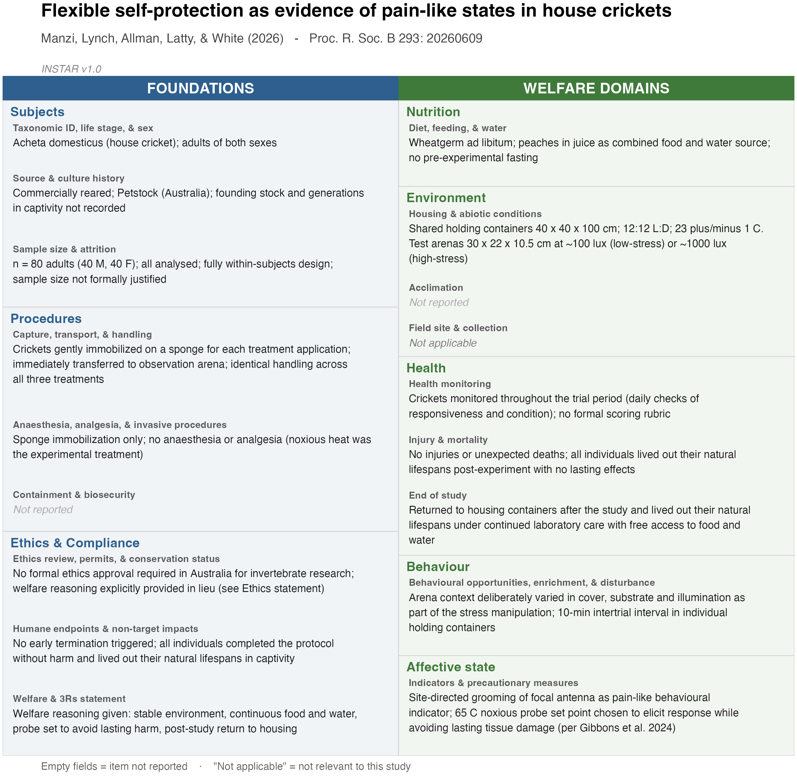

INvertebrate Standards for Treatment And Reporting
INSTAR is an 18-item reporting standard for how invertebrates are obtained, housed, handled, and disposed of in research. It asks for those details, and for the reasoning behind the choices that affect the animals, whether or not any formal ethics review applied to the work.
It is written for the researchers who use invertebrates, in ecology and evolution, behaviour, physiology and neurobiology, pathology, and mass rearing for food and feed. It can be adopted by an individual author without waiting for anyone’s permission.
Version 1.0. This is a living document, and we welcome feedback and suggestions.
The 18 items
Five welfare domains adapted from the Mellor Five Domains Model, and three cross-cutting foundations that apply regardless of domain.
| Domain | Items | |
|---|---|---|
| Foundations | Subjects | Taxonomic ID, life stage, & sex · Source & culture history · Sample size & attrition |
| Procedures | Capture, transport, & handling · Anaesthesia, analgesia, & invasive procedures · Containment & biosecurity | |
| Ethics & Compliance | Ethics review, permits, & conservation status · Humane endpoints & non-target impacts · Welfare & 3Rs statement | |
| Welfare domains | Nutrition | Diet, feeding, & water |
| Environment | Housing & abiotic conditions · Acclimation · Field site & collection | |
| Health | Health monitoring · Injury & mortality · End of study | |
| Behaviour | Behavioural opportunities, enrichment, & disturbance | |
| Affective state | Indicators & precautionary measures |
Not every item applies to every study. Each is flagged for laboratory work, field work, or both, and items that do not apply are marked as such rather than left ambiguous.
Getting started
The unit of work is a single file, INSTAR.csv, with one row per item and a report column you fill in. Write a sentence or two for each item your study reports, leave it blank for those it does not, and write NA for those that do not apply. Deposit the completed file alongside your paper as supplementary material.
It is plain text, so it stays readable and machine-readable indefinitely, and a set of them can be read back and summarised without anyone re-extracting the information from prose.
Three ways to complete it, all producing the same file.
In a spreadsheet. Download the blank sheet, fill in the report column, deposit it. No software required. INSTAR.csv · INSTAR.xlsx
In your browser. Fill the items in the web tool with a live preview, or upload a sheet you have already started. Nothing you enter leaves your machine. → instar-statement.org/app
In R. For scripted and reproducible workflows.
# install.packages("remotes")
remotes::install_github("thomased/instarreport")The summary figure
Optional, and useful mainly as a supplementary figure. The same completed sheet renders as a one-page summary in which every cell carries the substantive content for its item, in the same spirit as the PRISMA and ROSES diagrams for evidence synthesis. Here it is applied to a real study (Manzi et al. 2026):

The tools
Two implementations, both free and open source.
The R package provides the item set as data, three routes to completing it, validation against the canonical items, and functions that write both deposit artefacts. Because a deposited sheet is structured text rather than a picture, it also reads sheets back in. Point read_instar() at a directory of them and instar_audit() will summarise reporting coverage across a whole literature.
That second direction is the part a reporting standard usually cannot offer. Once sheets are being deposited routinely, questions like which items the field handles worst, whether reporting differs between laboratory and field studies, or whether it improves after a journal adopts the framework, become a matter of reading the deposited files rather than of hand-scoring papers. The same machinery works retrospectively on studies that predate INSTAR. Score them into a table of one row per paper and audit_from_matrix() treats them the same way, which is how the survey in the paper was carried out. Getting started walks through all of it.
The web tool offers the same functionality for those who do not work in R, and is private by construction. There is no server, no upload, and no account. The R session runs inside your browser tab via WebAssembly, and the file you build never leaves your computer unless you choose to save it. You can complete a report for unpublished work, on a shared or institutional machine, without any of it being transmitted anywhere. Once the page has loaded, it keeps working offline.
Citing INSTAR
If you use the framework, please cite the paper:
White, T. E., Lynch, K., Amory, J., Forster, C. Y., Hart, A. G., Latty, T., Umbers, K., & Drinkwater, E. (2026). INSTAR: Reporting items for invertebrate welfare in research. Manuscript in preparation.
citation("instarreport") prints this along with the software citation.